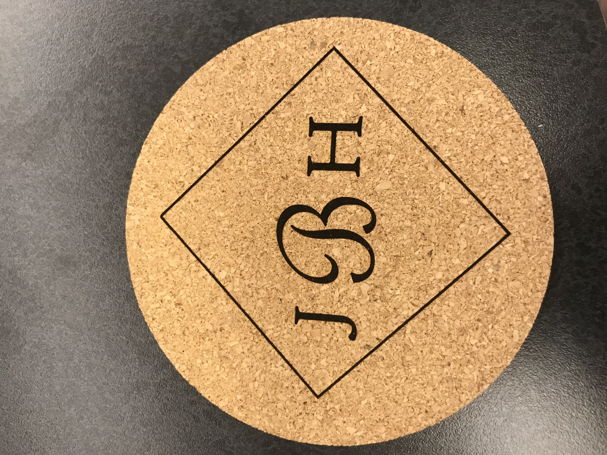
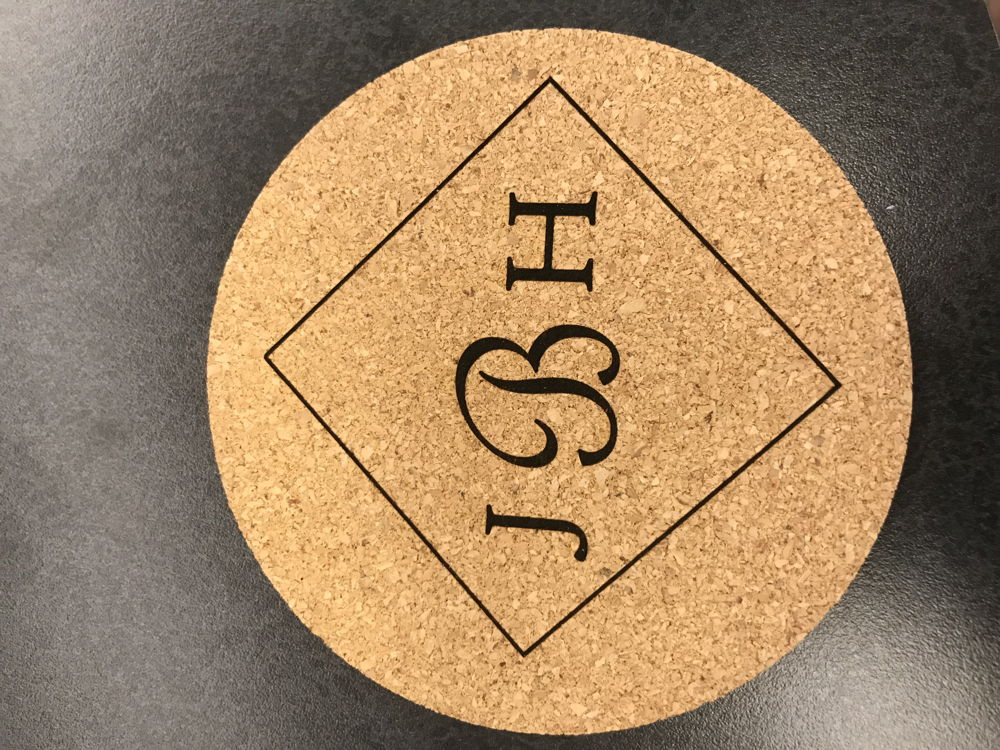

This week, I engraved a coaster, laser cut a waterbottle, and cut a vinyl record to serve as the base of my clock. To address my difficulties from the previous week of designing and execution within the alotted time, I decided to spend the first full work day of the rotation on the coaster, which I knew would take less time to design and cut in class. This gave me more time to think of design ideas for the record and watch my peers tackle the process themselves. In addition to knowing when and how to use rasters or vectors, designing the record was difficult because importing images often leads to entire chunks being fully removed unless you remove certain segments of a line. On the first day of the rotation, each of the few images I attempted to import were no good, and that
 



What I Can Do Better Next Time...